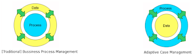

Dynamic BPM
There appears to be a new buzz in BPM lately (at least in a lot of blogs I’m following). Whether you call it dynamic BPM [1], adaptive case management [2] or unstructured, agile or adhoc processes, they all seem to point to a similar problem: the fact that traditional workflow management systems seem to have difficulties in supporting the kind of flexibility that is required nowadays in more complex settings or rapidly changing environments.
Gartner [1] suggests that dynamic BPM will become more and more important. Defining your application logic will require a combination of processes, rules and event processing, and I couldn’t agree more.
One thing that confuses me though, is that some people seem to position this adaptive case management as a new, separate form of BPM [2]. While I agree that you might need new concepts or a new approach to model, execute and manage these more flexible processes, I don’t think they should be considered as completely different. In practice, it is usually better to build on top of solid foundations (in this case traditional BPM) rather than to completely reinvent the wheel. Imho, there don’t seem to be any technical reasons why it would not be possible to extend a traditional process engine to be able to support both approaches.
And you definitely don’t want to end up with two or three different BPM products [3], just because you have a combination of traditional and non-lineair processes. [Hell, I think you don’t even want to end up with 3 different solutions for supporting processes, rules and events (one process engine, one rules engine and one CEP engine that you then need to integrate), but that another discussion.] Especially since I think these are not two completely different kinds of processes, but more like the two extremes of a wide spectrum of processes, where some have a stronger focus on control flow while others are more data-based.

I can only say that we are extremely happy to see that other people are now also seeing the advantage and even the necessity of combining processes, rules and events. Now it’s only a matter of time before someone invents a new name for BPM + BRM + CEP [4]
I’ll try to do a more technical blog in the next few weeks, and give some concrete examples how Drools [Flow] can be used to create this kind of adaptive processes, using a combination of (what we call) process fragments, rules and event processing.
[1] http://www.gartner.com/it/page.jsp?id=1278415
[2] http://www.xpdl.org/nugen/p/adaptive-case-management/public.htm
[3] http://www.column2.com/2010/03/but-customers-dont-want-three-bpmss/
[4] http://www.bpmredux.com/blog/2010/3/28/its-time-to-define-bpm-for-a-new-era-just-forget-about-the-n.html

{kind=link}